Linear Modeling and Logic Unit
4.9 Using Venn Diagrams to Analyze Deductive Arguments
State the premise illustrated by each Venn diagram
Tasha loves all dogs.
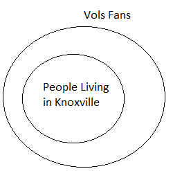All people living in Knoxville are Vols fans.
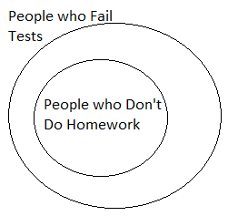All students who don't do their homework fail tests.
Some high school students are PSCC students.
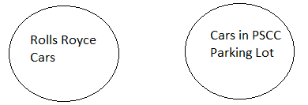No cars parked in the PSCC parking lot are Rolls Royce cars.
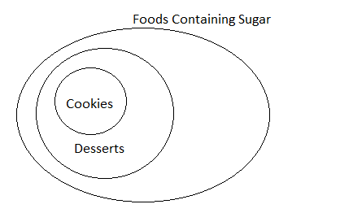All cookies are desserts and foods containing sugar.
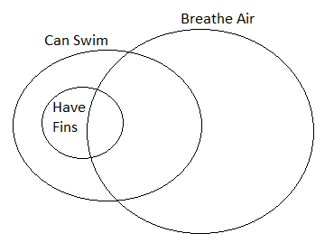All creatures that have fins can swim.
Some creatures that breathe air can swim.
Some creatures that breathe air can swim and have fins.
Deductive Argument: makes a case for a specific conclusion from a more general premise
- Valid if the conclusion follows necessarily from its premises (even if premises aren’t true)
- Sound if the argument is valid AND the premises are true.
Decide if the arguments are valid based on the premises illustrated by the Venn diagrams in #1-7.
- Use Venn diagram #1
- Lucky is a dog, therefore Tasha loves Lucky.
- Lucky is a four leaf clover, therefore Tasha does not love Lucky.
valid
invalid
- Use Venn diagram #2
- Lara lives in Knoxville, therefore Lara is a Vols fan.
- Lara is a Vols fan, therefore Lara lives in Knoxville.
valid
invalid
- Use Venn diagram #3
- You didn’t do your homework, therefore you failed the math test.
- You did your homework, therefore you passed the math test.
valid
invalid
- Use Venn diagram #4
- Daniel is in high school, therefore Daniel does not take classes at PSCC.
- Daniel is not in high school, therefore Daniel is a student at PSCC.
invalid
invalid
- Use Venn diagram #5
- I drive a Rolls Royce, therefore I don’t park in the PSCC parking lot.
- I drive a Honda, therefore my car is in the PSCC parking lot.
valid
invalid
- Use Venn diagram #6: Snickerdoodles are cookies, therefore they contain sugar.
- Use Venn diagram #7
- Fish have fins, therefore they breathe air.
- Fish have fins, therefore they can swim.
- Dogs can swim, therefore they have fins.
invalid
valid
invalid
valid
The following deductive arguments are called syllogisms. A syllogism is an argument that contains two premises and a conclusion.
Using a Venn diagram, determine if the following arguments are valid or invalid.
- Premise: If you liked the book, then you’ll love the movie.
- Premise: Monocot flower parts are in multiples of three.
- Premise: All Pellissippi State students drive to class.
- Premise: Some of the cars in the PSCC parking lot are Toyotas.
- Premise: All dairy products contain protein.
- Premise: All U.S. Presidents have been men.
- Premise: Some college students receive financial aid.
- Premise: All CEOs can whistle a Springsteen tune.
- Premise: No country is an island.
- Premise: If it is a bird, then its young are hatched from eggs.
- Premise: If you live in Boston, you live in Massachusetts.
- Premise: It’s necessary for nurses to know CPR.
- Premise: Novels written in the 19th century were not written on a word processor.
- Premise: If it is cold, my motorcycle will not start.
- Premise: Some dogs eat people food.
- Premise: Platypuses are mammals.
- Premise: If it rains or snows, then I read.
- Premise: If it rains or snows, then I read.
- Premise: All Democrats are conservatives.
- Premise: I always complain when it’s hot.
Premise: You did not like the book.
Conclusion: You will not love the movie.
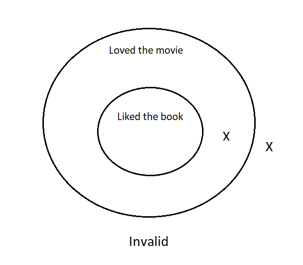
Premise: Apple flowers have five petals.
Conclusion: Apple trees are not monocots.
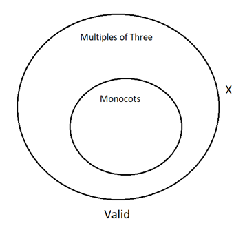
Premise: Sarah is a Pellissippi State student.
Conclusion: Sarah drives to class.
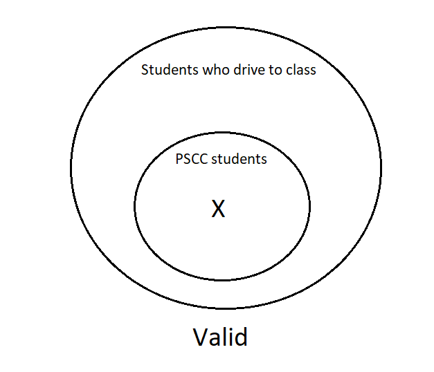
Premise: Emily’s car is in the PSCC parking lot.
Conclusion: Emily’s car is a Toyota.
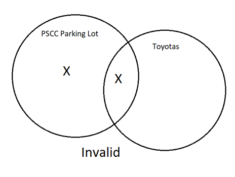
Premise: Soybeans contain protein.
Conclusion: Soybeans are dairy products.
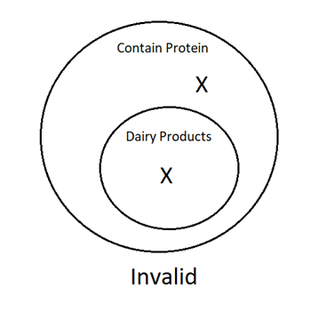
Premise: George Washington was a man.
Conclusion: George Washington was a U.S. President.
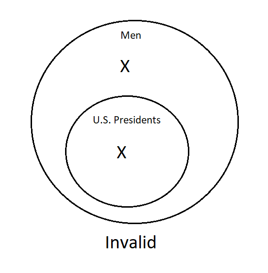
Premise: Cara is receiving financial aid.
Conclusion: Cara is a college student.
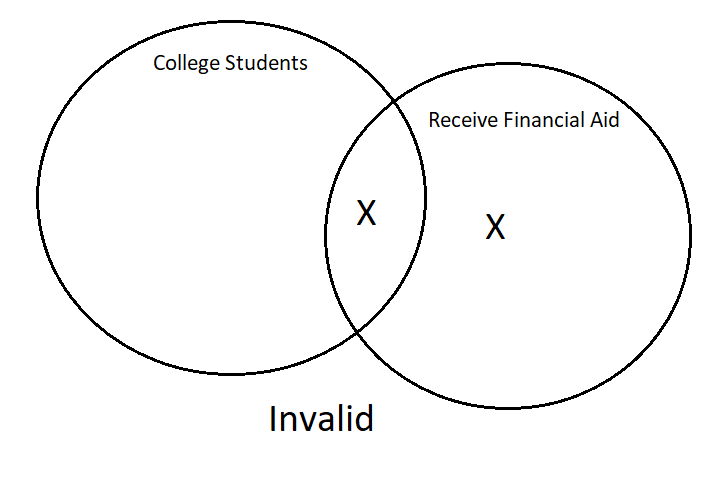
Premise: Steve Jobs was a CEO.
Conclusion: Steve Jobs could whistle a Springsteen tune.
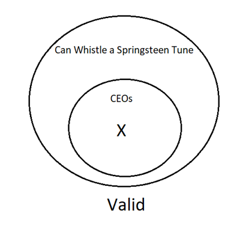
Premise: Iceland is a country.
Conclusion: Iceland is not an island.
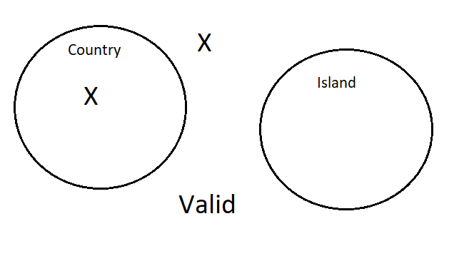
Premise: Condors are birds.
Conclusion: Condor chicks are hatched from eggs.
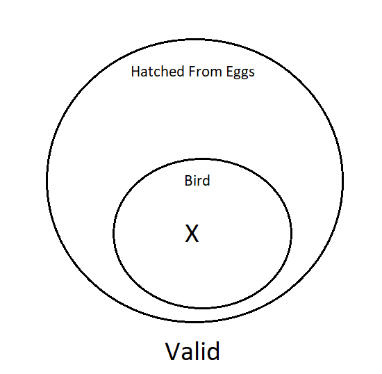
Premise: Bruno lives in Massachusetts.
Conclusion: Bruno lives in Boston.
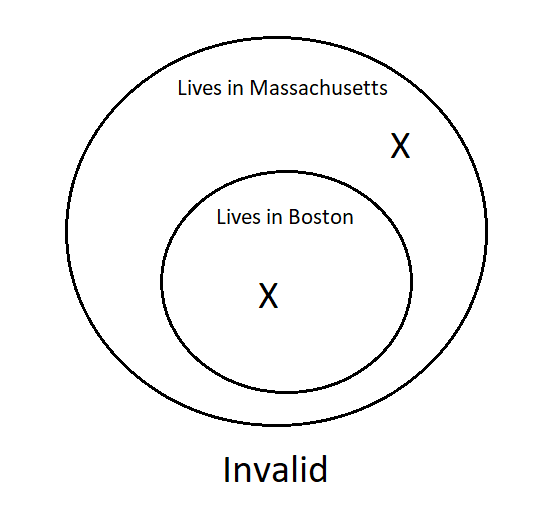
Premise: Tom is a nurse.
Conclusion: Tom knows CPR.
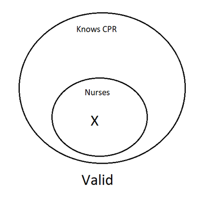
Premise: Jake finished writing his first novel last year.
Conclusion: Jake’s first novel was written on a word processor.
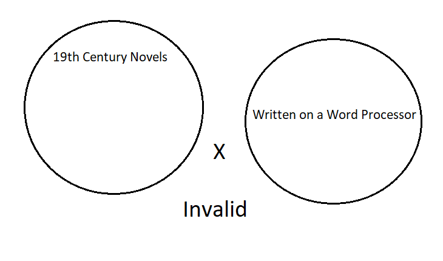
Premise: My motorcycle started.
Conclusion: It is not cold.
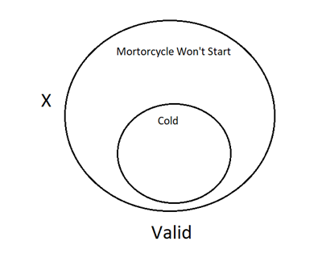
Premise: Callie eats dog food.
Conclusion: Callie is not a dog.
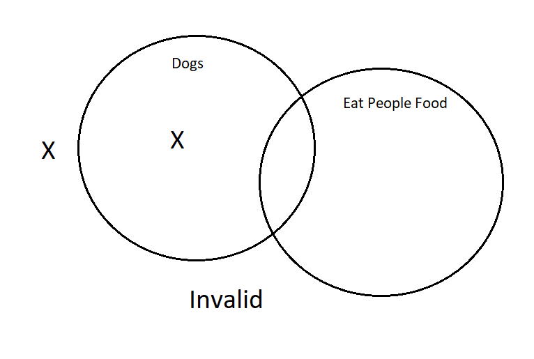
Premise: Platypuses lay eggs.
Conclusion: Some mammals lay eggs.
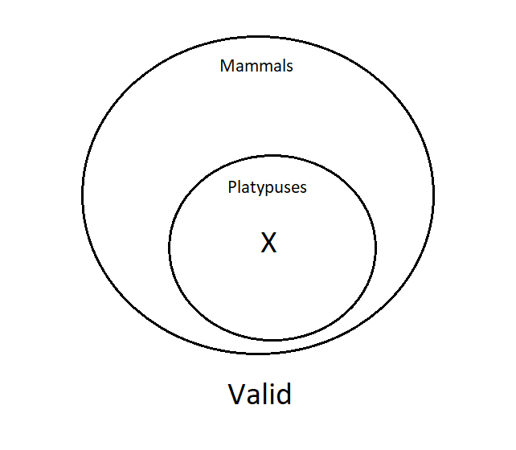
Premise: I am not reading.
Conclusion: It is neither raining or snowing.
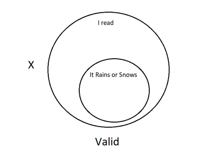
Premise: I am reading.
Conclusion: It is raining or snowing.
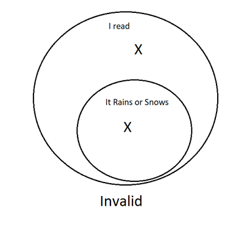
Premise: All conservatives are against stem cell research.
Conclusion: All Democrats are against stem cell research.
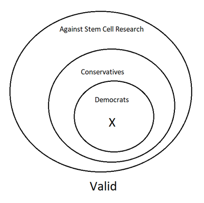
Premise: It’s not hot.
Conclusion: I’m not complaining.
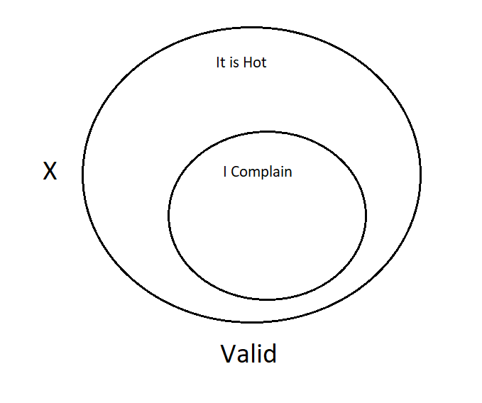